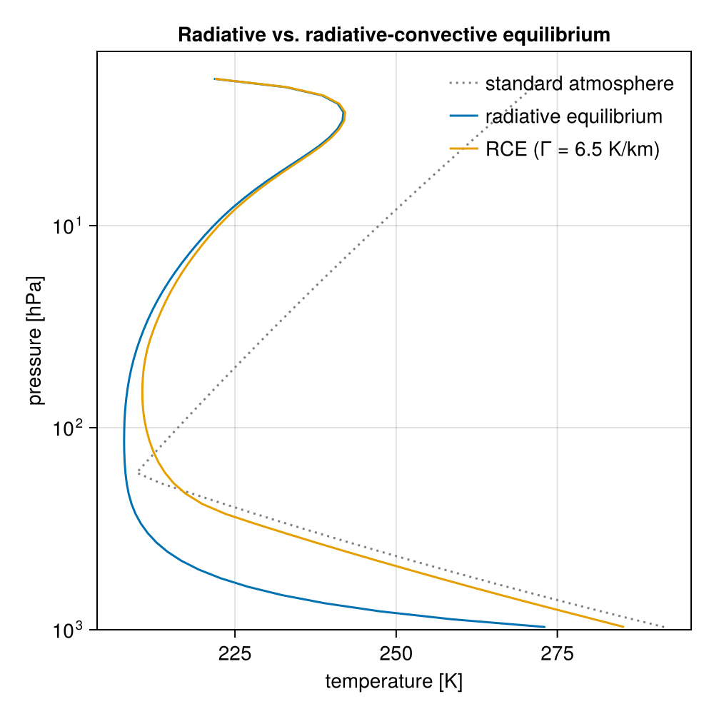
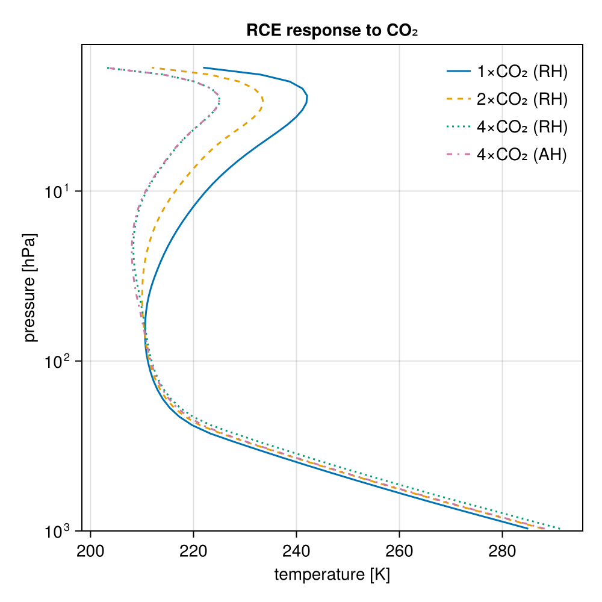
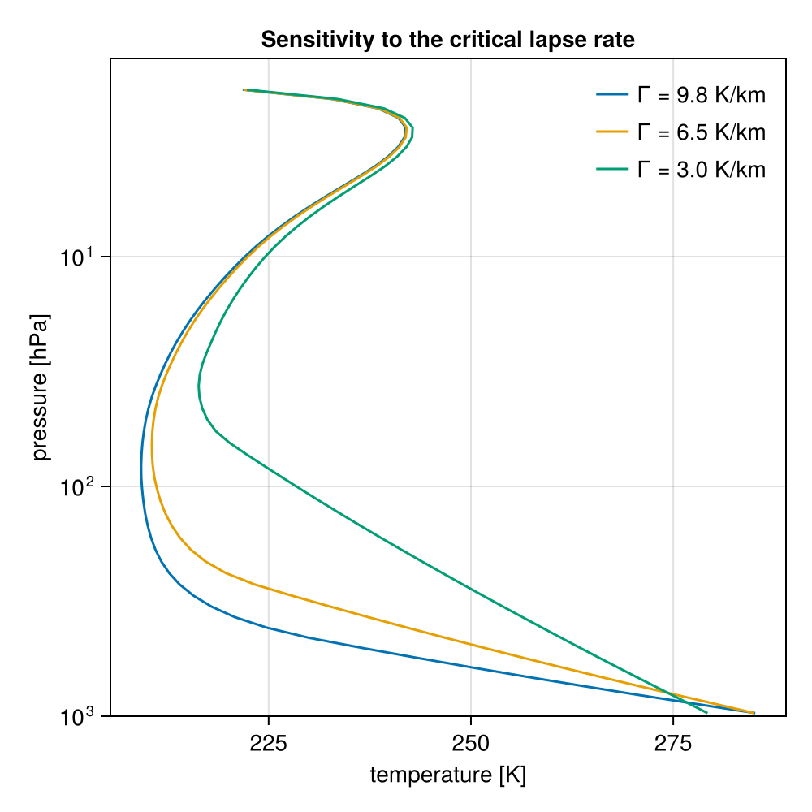
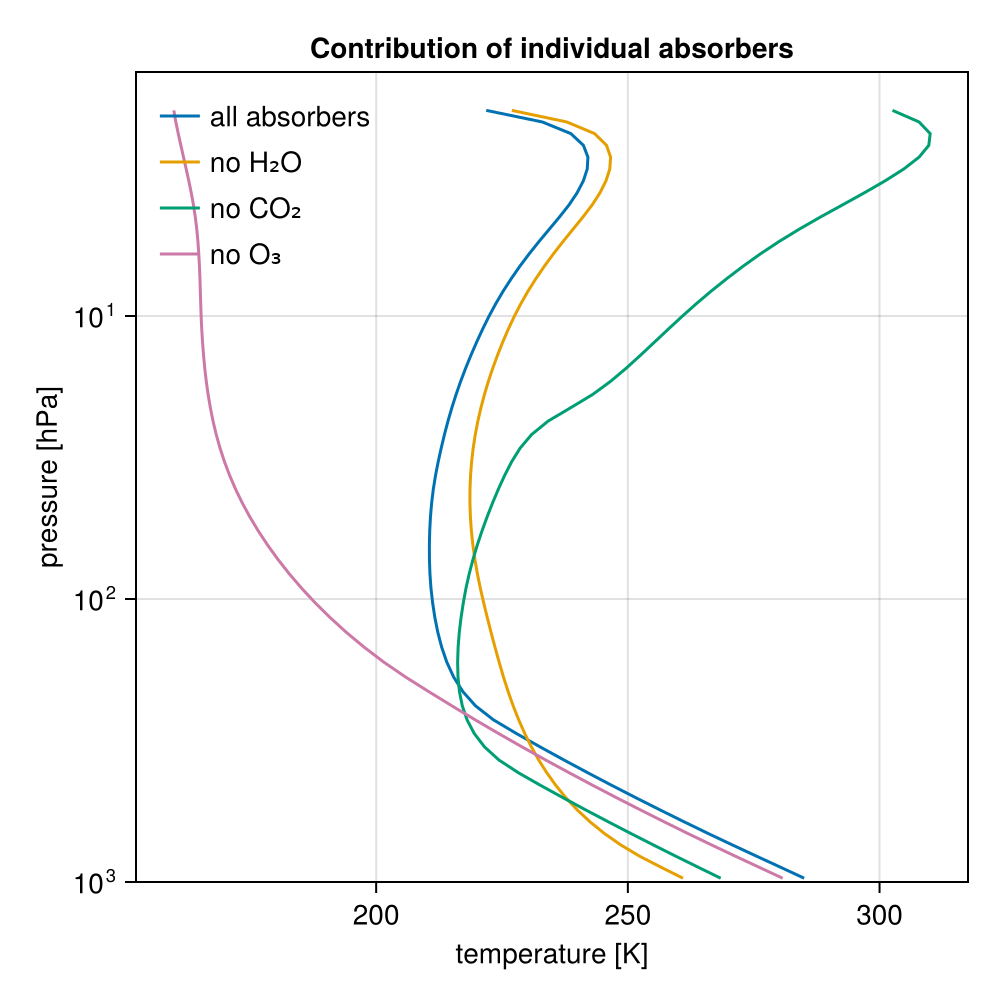

Radiative-convective equilibrium (Manabe's classic experiment)
This tutorial reproduces the classic radiative-convective equilibrium (RCE) calculations of Manabe and Strickler [6] and Manabe and Wetherald [7] with RRTMGP's clear-sky gas optics: a single atmospheric column with
- a prescribed tropospheric lapse rate (convective adjustment to 6.5 K/km),
- a prescribed relative-humidity profile (water vapor follows the temperature), and
- a stratosphere in radiative equilibrium.
The same setup (hard convective adjustment plus fixed relative humidity) is the default configuration of the single-column model konrad, and Kluft et al. [8] showed that it reproduces Manabe's headline result: an equilibrium climate sensitivity of about 2 K per doubling of CO₂ when relative humidity is held fixed.
From this one setup, we reproduce Manabe's classic results: the radiative-versus-radiative-convective comparison, the decomposition of the greenhouse effect into its individual absorbers (water vapor, CO₂, ozone), the dependence of the equilibrium on the assumed lapse rate, and the surface warming under CO₂ increases with the water-vapor feedback isolated by contrasting fixed relative and fixed absolute humidity.
Along the way, this tutorial demonstrates the host-model workflow of RRTMGP.jl: build a solver once, then mutate its state through the getter contract and call update_fluxes! inside a time loop.
using RRTMGP
using NCDatasets # activates RRTMGP's lookup-table extension
import Thermodynamics as TD
import ClimaParams # brings in the CliMA default thermodynamic constants
using CairoMakieThe column
Start from the idealized midlatitude-summer standard atmosphere on 60 layers up to 45 km. Its pressure grid, ozone profile, and well-mixed gases (CO₂ = 420 ppmv, etc.) stay fixed; temperature and water vapor will be overwritten by the RCE iteration. We keep a copy of the standard-atmosphere temperature to overlay later as the "observed" reference.
const FT = Float64
nlay = 60
profile = RRTMGP.standard_atmosphere(FT; kind = :midlatitude_summer, nlay);
T_obs = copy(profile.t_lay[:, 1]);Like Manabe and collaborators, we force the column with the global-mean insolation $S_0/4 \approx 341$ W/m² (the solar constant spread over the sphere). Because the mean solar zenith angle sets the shortwave absorption path length [9], we use a representative zenith angle of 47.9° ($\cos θ \approx 0.67$) with an incident flux of 509 W/m², so that $509 \times \cos(47.9^\circ) \approx 341$ W/m². The surface albedo is set to 0.3, higher than a bare surface, to stand in for the shortwave reflection of the clouds this clear-sky column omits:
insolation = (; cos_zenith = cosd(47.9), toa_flux = 509.0, surface_albedo = 0.3);Both RRTMGP and Thermodynamics.jl read their physical constants from ClimaParams.jl, the single source of truth for CliMA parameters, so the constants used across the radiation and thermodynamics calculations here are consistent. We build both parameter sets from it and take the gravitational acceleration, the dry-air gas constant, and the dry-air heat capacity from them:
params = RRTMGP.Parameters.RRTMGPParameters(FT)
td_params = TD.Parameters.ThermodynamicsParameters(FT)
R_d = TD.Parameters.R_d(td_params)
cp_d = TD.Parameters.cp_d(td_params)
g = RRTMGP.Parameters.grav(params) # gravitational acceleration [m/s²]9.81The iteration below marches the layer temperatures, so we ask the solver to rebuild the level (cell-face) temperatures and pressures from the layer (cell-center) values on every update_fluxes! call: interpolation = ArithmeticMean() averages the adjacent layers on interior faces and extrapolates linearly at the boundary faces. We collect this, the parameters, and the insolation into one configuration shared by every column in this tutorial. One call then builds the clear-sky solver (downloading the RRTMGP lookup tables on first use) and solves the initial state; its state is exposed as writable views that the iteration overwrites in place:
setup = (; params, insolation..., interpolation = RRTMGP.ArithmeticMean())
out = RRTMGP.solve(profile; setup...)
solver = out.solver;Fixed relative humidity
Manabe and Wetherald prescribed the relative-humidity profile $h(p) = 0.77\,(p/p_s - 0.02)/(1 - 0.02)$, so the specific humidity rises and falls with the temperature (the water-vapor feedback in its simplest form). The saturation vapor pressure $e^*(T)$ comes from Thermodynamics.jl, which integrates the Clausius-Clapeyron relation under the Rankine-Kirchhoff (constant-heat-capacity) approximation [10], the same formulation the CliMA model uses. From the vapor partial pressure $e = h\,e^*$ the water-vapor volume mixing ratio (moles of vapor per mole of dry air, RRTMGP's convention) is $e/(p - e)$. We floor it at the stratospheric minimum Manabe used (a vmr of ≈ 4.8 × 10⁻⁶).
e_sat(T) = TD.saturation_vapor_pressure(td_params, T, TD.Liquid()) # [Pa]
rel_hum(p, p_sfc) = max(0.77 * (p / p_sfc - 0.02) / (1 - 0.02), 0.0)
const vmr_h2o_min = 4.8e-6
function set_humidity!(solver)
T = RRTMGP.layer_temperature(solver)
p = RRTMGP.layer_pressure(solver)
vmr = RRTMGP.volume_mixing_ratio(solver, "h2o")
p_sfc = RRTMGP.level_pressure(solver)[1, 1]
e = rel_hum.(p, p_sfc) .* e_sat.(T) # vapor partial pressure [Pa]
@. vmr = max(e / (p - e), vmr_h2o_min)
# Alternatively, Thermodynamics.jl can do both steps in one go:
# q = TD.q_vap_from_RH.(td_params, p, T, rel_hum.(p, p_sfc), Ref(TD.Liquid()))
# @. vmr = max(TD.vol_vapor_mixing_ratio(td_params, q), vmr_h2o_min)
return nothing
end;Convective adjustment
The steepest lapse rate a dry column sustains is the dry adiabatic value $Γ_d = g/c_p$, calculated from the Thermodynamics.jl constants:
Γ_dry = g / cp_d
println("dry adiabatic lapse rate g/cₚ = $(round(1000 * Γ_dry; digits = 1)) K/km")dry adiabatic lapse rate g/cₚ = 9.8 K/kmMoist convection and large-scale eddies hold the observed troposphere to a gentler value, so we impose a critical lapse rate of 6.5 K/km. Wherever radiative cooling pulls the lapse rate above it, convection is assumed to instantaneously restore the critical profile $T(z) = T_s - Γ z$, anchored at a trial surface temperature $T_s$ (hard adjustment). The lapse rate is defined per unit height, yet no altitudes are needed to apply it: combining $dT/dz = -Γ$ with hydrostatic balance and the ideal-gas law gives $dT/T = (Γ R_d / g)\, dp/p$, so in the solver's native pressure coordinate, the critical profile is the power law
\[T_c(p) = T_s \left(\frac{p}{p_s}\right)^{Γ R_d / g},\]
which reduces to the dry adiabat $T \propto p^{R_d/c_p}$ for $Γ = g/c_p$. Layers whose radiative-equilibrium temperature is warmer than $T_c$ (the stratosphere) are left untouched, allowing the tropopause to emerge from the calculation.
Although convection should only redistribute energy, not create or destroy it, convective adjustment by itself does not conserve column energy. We enforce energy conservation in equilibrium by adjusting the surface temperature (an unknown of the problem): each equilibration below holds a trial $T_s$ fixed, and the trial value is then adjusted until the net radiative flux at the top of the atmosphere vanishes, so the energy balance determines $T_s$.
const Γ_crit = 6.5e-3 # critical lapse rate [K/m]
function convective_adjustment!(solver, T_sfc; Γ = Γ_crit)
T = RRTMGP.layer_temperature(solver)
p = RRTMGP.layer_pressure(solver)
p_sfc = RRTMGP.level_pressure(solver)[1, 1]
@. T = max(T, T_sfc * (p / p_sfc)^(Γ * R_d / g)) # critical profile T_c(p)
return nothing
end;The RCE iteration
Each step applies the convective adjustment, updates the water vapor to the fixed relative humidity, solves the radiative transfer, and marches the temperature with the radiative heating rate. Level (cell-face) temperatures are rebuilt from the layer (cell-center) temperatures inside update_fluxes!, by the ArithmeticMean interpolation requested at construction. The ground temperature enters separately, through the surface-emission boundary condition (surface_temperature); keeping the two distinct lets the air at the bottom face be colder than the ground, which pure radiative equilibrium demands (the UseSurfaceTempAtBottom extrapolation option would pin the bottom face to the ground temperature and spuriously chill the lowest layer in the radiative-equilibrium experiment). The column is equilibrated when the largest temperature change per step is negligible.
Marching the layer temperatures independently excites a grid-scale (two-layer) oscillation in the stratosphere: a sawtooth in the layer temperatures maps to nearly unchanged level temperatures, so it barely perturbs the level fluxes that would otherwise damp it, and it survives no matter how small the time step. We remove it with a light three-point (1-2-1) filter applied to the interior layers each step — a weak numerical diffusion. Its damping is scale-selective: each step multiplies a mode of wavelength $L$ by $1 - 4ν\sin^2(πΔz/L)$, so the two-layer mode shrinks by $1 - 4ν$ per step while smooth structure, which the filter perturbs only in proportion to its curvature, is nearly untouched. The main visible cost is a slight rounding of the tropopause kink; the balanced surface temperature shifts by less than 0.1 K.
function smooth!(T, ν)
nlay = size(T, 1)
prev = T[1, 1]
for k in 2:(nlay - 1)
cur = T[k, 1]
T[k, 1] = cur + ν * (prev - 2cur + T[k + 1, 1])
prev = cur
end
return nothing
endsmooth! (generic function with 1 method)One iteration serves every experiment: convection = false gives pure radiative equilibrium, humidity = false holds the water vapor constant (used below to remove water vapor entirely and to freeze it for the fixed-absolute-humidity experiments), and the Γ keyword changes the critical lapse rate. The adjustment and humidity are synced before each solve, including on the final (converged) step, so the reported fluxes are consistent with the temperatures.
function equilibrate!(
solver,
T_sfc;
convection = true,
humidity = true,
Γ = Γ_crit,
dt = 8 * 3600.0,
maxsteps = 5000,
tol = 1e-4,
ν = 0.1,
)
RRTMGP.surface_temperature(solver) .= T_sfc
T = RRTMGP.layer_temperature(solver)
for _ in 1:maxsteps
convection && convective_adjustment!(solver, T_sfc; Γ)
humidity && set_humidity!(solver)
RRTMGP.update_fluxes!(solver)
dT = clamp.(dt .* Array(RRTMGP.heating_rate(solver)), -2, 2)
maximum(abs, dT) < tol && break
T .+= dT
smooth!(T, ν)
end
return nothing
end;Run it. The net flux at the top of the atmosphere (net = up - down) measures the column's energy imbalance; at the true equilibrium surface temperature it vanishes.
toa_imbalance(solver) = RRTMGP.net_flux(solver)[end, 1]
T_sfc = FT(288)
equilibrate!(solver, T_sfc)
N = toa_imbalance(solver)
println("TOA imbalance at Tₛ = $(T_sfc) K: $(round(N; digits = 2)) W/m²")TOA imbalance at Tₛ = 288.0 K: 0.58 W/m²Radiative equilibrium versus radiative-convective equilibrium
Repeating the iteration without the convective adjustment reproduces Manabe and Strickler's famous comparison: pure radiative equilibrium produces high surface temperatures and low upper-troposphere temperatures, while the convective adjustment brings the profile into agreement with observations (here, the midlatitude-summer standard atmosphere we started from). Near the surface, the radiative-equilibrium temperature falls steeply — far more steeply than any adiabat — and the air at the bottom face remains several kelvin colder than the 288 K ground: the classic surface discontinuity of radiative equilibrium. Both features are convectively unstable; the turbulent heat fluxes that the convective adjustment stands in for would erase them, which is what the RCE profile shows.
T_rce = copy(Array(RRTMGP.layer_temperature(solver)))
p_lay = copy(Array(RRTMGP.layer_pressure(solver)))
solver_re = RRTMGP.solve(profile; lookups = solver.lookups, setup...).solver
equilibrate!(solver_re, T_sfc; convection = false)
T_re = copy(Array(RRTMGP.layer_temperature(solver_re)));
fig = Figure(size = (500, 500))
ax = Axis(
fig[1, 1];
xlabel = "temperature [K]",
ylabel = "pressure [hPa]",
yscale = log10,
yreversed = true,
limits = (nothing, nothing, nothing, 1000),
title = "Radiative vs. radiative-convective equilibrium",
)
lines!(ax, T_obs, p_lay[:, 1] ./ 100; color = :gray, linestyle = :dot, label = "standard atmosphere")
lines!(ax, T_re[:, 1], p_lay[:, 1] ./ 100; label = "radiative equilibrium")
lines!(ax, T_rce[:, 1], p_lay[:, 1] ./ 100; label = "RCE (Γ = 6.5 K/km)")
axislegend(ax; position = :rt, framevisible = false, backgroundcolor = :white)
fig
Climate sensitivity at fixed relative humidity
Manabe and Wetherald's headline experiment: find the surface temperature that balances the column (zero net flux at the top of the atmosphere) for the present CO₂ concentration and for increased CO₂, keeping the relative humidity fixed. The difference is the equilibrium climate sensitivity of the radiative-convective column.
A secant iteration on the TOA imbalance converges in a few equilibrations (each restarted from the previous equilibrium, so they are fast):
function balanced_surface_temperature!(solver, T1, T2; humidity = true, Γ = Γ_crit, tol = 5e-3)
eq(T) = (equilibrate!(solver, T; humidity, Γ); toa_imbalance(solver))
N1 = eq(T1)
N2 = eq(T2)
while abs(N2) > tol && abs(T2 - T1) > 1e-3
Tn = T2 - N2 * (T2 - T1) / (N2 - N1)
T1, N1 = T2, N2
T2 = Tn
N2 = eq(T2)
end
return T2
end
Ts_1x = balanced_surface_temperature!(solver, FT(285), FT(290))
T_1x = copy(Array(RRTMGP.layer_temperature(solver)))
vmr_1x = copy(Array(RRTMGP.volume_mixing_ratio(solver, "h2o"))) # reference vapor, for fixed AH
println("equilibrium Tₛ (1 × CO₂): $(round(Ts_1x; digits = 2)) K")equilibrium Tₛ (1 × CO₂): 287.67 KThe reference tropopause — the highest layer still on the critical profile — sits near 10 km. On that profile, height and temperature are interchangeable, $z = (T_s - T)/Γ$, so the height follows from the temperature of the highest adjusted layer, again with no altitude reconstruction:
function tropopause_height(solver, T_sfc; Γ = Γ_crit)
T = Array(RRTMGP.layer_temperature(solver))[:, 1]
p = Array(RRTMGP.layer_pressure(solver))[:, 1]
p_sfc = Array(RRTMGP.level_pressure(solver))[1, 1]
k = findlast(abs.(T .- T_sfc .* (p ./ p_sfc) .^ (Γ * R_d / g)) .< 0.5)
return (T_sfc - T[k]) / Γ
end
println("tropopause height ≈ $(round(tropopause_height(solver, Ts_1x) / 1000; digits = 1)) km")tropopause height ≈ 9.9 kmNow scale the CO₂ and re-balance. balanced_co2 builds a fresh column with a scaled CO₂ concentration, warm-starts it from the 1 × CO₂ equilibrium, and finds its balanced surface temperature. With fixed_rh = false, the water vapor is frozen at its reference (1 × CO₂) values (fixed absolute humidity) which removes the water-vapor feedback and isolates the direct effect of CO₂.
co2_1x = profile.well_mixed_vmr["co2"]
function balanced_co2(factor; fixed_rh = true, bracket = (Ts_1x, Ts_1x + 3))
prof = RRTMGP.standard_atmosphere(FT; kind = :midlatitude_summer, nlay)
prof.well_mixed_vmr["co2"] = factor * co2_1x
slv = RRTMGP.solve(prof; lookups = solver.lookups, setup...).solver
RRTMGP.layer_temperature(slv) .= T_1x # warm start
fixed_rh || (RRTMGP.volume_mixing_ratio(slv, "h2o") .= vmr_1x) # freeze reference vapor
Ts = balanced_surface_temperature!(slv, bracket...; humidity = fixed_rh)
return Ts, copy(Array(RRTMGP.layer_temperature(slv)))
end
Ts_2x_rh, T_2x_rh = balanced_co2(2)
Ts_4x_rh, T_4x_rh = balanced_co2(4; bracket = (Ts_1x + 3, Ts_1x + 7))
Ts_2x_ah, T_2x_ah = balanced_co2(2; fixed_rh = false, bracket = (Ts_1x, Ts_1x + 2))
Ts_4x_ah, T_4x_ah = balanced_co2(4; fixed_rh = false, bracket = (Ts_1x + 1, Ts_1x + 4));Collect the surface temperatures into a table. Comparing the fixed-RH and fixed-AH warming at the same forcing isolates the water-vapor feedback:
rows = (
("reference (1×CO₂, RH)", Ts_1x, nothing),
("2×CO₂, fixed RH", Ts_2x_rh, Ts_2x_rh - Ts_1x),
("4×CO₂, fixed RH", Ts_4x_rh, Ts_4x_rh - Ts_1x),
("2×CO₂, fixed AH", Ts_2x_ah, Ts_2x_ah - Ts_1x),
("4×CO₂, fixed AH", Ts_4x_ah, Ts_4x_ah - Ts_1x),
)
println(rpad("experiment", 24), lpad("Tₛ [K]", 9), lpad("ΔTₛ [K]", 10))
for (name, Ts, dT) in rows
dstr = dT === nothing ? "—" : string(round(dT; digits = 1))
println(rpad(name, 24), lpad(round(Ts; digits = 1), 9), lpad(dstr, 10))
endexperiment Tₛ [K] ΔTₛ [K]
reference (1×CO₂, RH) 287.7 —
2×CO₂, fixed RH 290.5 2.9
4×CO₂, fixed RH 294.0 6.3
2×CO₂, fixed AH 289.2 1.5
4×CO₂, fixed AH 290.8 3.2With fixed relative humidity and hard adjustment to 6.5 K/km, the equilibrium climate sensitivity (the warming per CO₂ doubling) comes out near 2.9 K — in the range of the classic calculations: Manabe and Wetherald obtained 2.36 K with their radiation scheme, and konrad's re-examination with RRTMG yields ≈ 2.1 K (Kluft et al. [8]). The warming is roughly logarithmic in CO₂, growing slightly with each doubling as the warmer column holds more water vapor. Freezing the water vapor (fixed AH) roughly halves the warming, so the water-vapor feedback about doubles the response. The residual spread among the published sensitivities traces to the humidity profile, the adjustment scheme, and the ozone treatment; Kluft et al. [11] dissects these dependencies, which you can reproduce by editing a few lines above.
The warmed column shows the classic fingerprint of CO₂-driven change: tropospheric warming with stratospheric cooling. This pattern was predicted decades before it was observed. Fixed absolute humidity gives the same qualitative pattern but a weaker surface warming.
fig2 = Figure(size = (500, 500))
ax2 = Axis(
fig2[1, 1];
xlabel = "temperature [K]",
ylabel = "pressure [hPa]",
yscale = log10,
yreversed = true,
limits = (nothing, nothing, nothing, 1000),
title = "RCE response to CO₂",
)
lines!(ax2, T_1x[:, 1], p_lay[:, 1] ./ 100; label = "1×CO₂ (RH)")
lines!(ax2, T_2x_rh[:, 1], p_lay[:, 1] ./ 100; linestyle = :dash, label = "2×CO₂ (RH)")
lines!(ax2, T_4x_rh[:, 1], p_lay[:, 1] ./ 100; linestyle = :dot, label = "4×CO₂ (RH)")
lines!(ax2, T_4x_ah[:, 1], p_lay[:, 1] ./ 100; linestyle = :dashdot, label = "4×CO₂ (AH)")
axislegend(ax2; position = :rt, framevisible = false, backgroundcolor = :white)
fig2
Sensitivity to the critical lapse rate
The assumed critical lapse rate $Γ_c$ shapes the equilibrium. Re-balancing the reference column for lapse rates from a stable moist adiabat (3.0 K/km) to the dry adiabat (9.8 K/km) shows that a shallower lapse rate cools the surface but lifts the tropopause: the troposphere "stretches" vertically because the gentler gradient needs more depth to bridge the surface and stratospheric temperatures. All the profiles balance the same absorbed sunlight, so they emit the same outgoing longwave radiation to space.
fig3 = Figure(size = (500, 500))
ax3 = Axis(
fig3[1, 1];
xlabel = "temperature [K]",
ylabel = "pressure [hPa]",
yscale = log10,
yreversed = true,
limits = (nothing, nothing, nothing, 1000),
title = "Sensitivity to the critical lapse rate",
)
for Γ_km in (9.8, 6.5, 3.0)
prof = RRTMGP.standard_atmosphere(FT; kind = :midlatitude_summer, nlay)
slv = RRTMGP.solve(prof; lookups = solver.lookups, setup...).solver
Ts = balanced_surface_temperature!(slv, FT(270), FT(292); Γ = Γ_km * 1e-3)
z_top = tropopause_height(slv, Ts; Γ = Γ_km * 1e-3) / 1000
println("Γ = $(Γ_km) K/km: Tₛ = $(round(Ts; digits = 1)) K, tropopause ≈ $(round(z_top; digits = 1)) km")
T = Array(RRTMGP.layer_temperature(slv))
lines!(ax3, T[:, 1], p_lay[:, 1] ./ 100; label = "Γ = $(Γ_km) K/km")
end
axislegend(ax3; position = :rt, framevisible = false, backgroundcolor = :white)
fig3
Contributions of the individual absorbers
Manabe and Wetherald's other classic diagnostic isolates each greenhouse gas. We remove water vapor, carbon dioxide, or ozone one at a time, find the column's balanced surface temperature, and compare against the reference (all-absorbers) profile computed above. Water vapor is removed by zeroing it and holding it there (humidity = false); ozone by zeroing its layer profile; CO₂ by setting its well-mixed value to zero before the state is built.
function rce_without(absorber, T1, T2)
prof = RRTMGP.standard_atmosphere(FT; kind = :midlatitude_summer, nlay)
absorber === :co2 && (prof.well_mixed_vmr["co2"] = 0.0)
slv = RRTMGP.solve(prof; lookups = solver.lookups, setup...).solver
absorber === :o3 && (RRTMGP.volume_mixing_ratio(slv, "o3") .= 0)
absorber === :h2o && (RRTMGP.volume_mixing_ratio(slv, "h2o") .= 0)
Ts = balanced_surface_temperature!(slv, T1, T2; humidity = absorber !== :h2o)
return Ts, copy(Array(RRTMGP.layer_temperature(slv)))
end
# brackets straddle each case's expected surface temperature; the secant
# converges from either side
Ts_no_h2o, T_no_h2o = rce_without(:h2o, FT(255), FT(272))
Ts_no_co2, T_no_co2 = rce_without(:co2, FT(264), FT(278))
Ts_no_o3, T_no_o3 = rce_without(:o3, FT(278), FT(288))
for (name, Ts) in (
("all absorbers", Ts_1x),
("no H₂O", Ts_no_h2o),
("no CO₂", Ts_no_co2),
("no O₃", Ts_no_o3),
)
println("equilibrium Tₛ ($name): $(round(Ts; digits = 1)) K")
endequilibrium Tₛ (all absorbers): 287.7 K
equilibrium Tₛ (no H₂O): 263.2 K
equilibrium Tₛ (no CO₂): 271.0 K
equilibrium Tₛ (no O₃): 283.3 KThe decomposition reproduces the textbook ordering. Water vapor is the largest contributor: removing it drops the surface more than 20 K, below the freezing point. Carbon dioxide is the next largest. Ozone affects the surface less, but strongly cools the stratosphere it otherwise heats by absorbing solar ultraviolet; the mid-atmosphere temperature inversion disappears without it.
fig4 = Figure(size = (500, 500))
ax4 = Axis(
fig4[1, 1];
xlabel = "temperature [K]",
ylabel = "pressure [hPa]",
yscale = log10,
yreversed = true,
limits = (nothing, nothing, nothing, 1000),
title = "Contribution of individual absorbers",
)
lines!(ax4, T_1x[:, 1], p_lay[:, 1] ./ 100; label = "all absorbers")
lines!(ax4, T_no_h2o[:, 1], p_lay[:, 1] ./ 100; label = "no H₂O")
lines!(ax4, T_no_co2[:, 1], p_lay[:, 1] ./ 100; label = "no CO₂")
lines!(ax4, T_no_o3[:, 1], p_lay[:, 1] ./ 100; label = "no O₃")
axislegend(ax4; position = :lt, framevisible = false, backgroundcolor = :white)
fig4
Where to go from here
- Vary the critical lapse rate or the relative-humidity profile and watch the sensitivity respond (cf. Kluft et al. [11]).
- Swap
:midlatitude_summerfor:tropicalor:subarctic_winter.
This page was generated using Literate.jl.